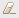

Editing General Information for a REST API Descriptor
When you create a REST API Descriptor (RAD), Integration Server uses the general information that you supplied such as title, base path, version, and MIME types to populate the General tab in the RAD editor. Additionally, you can add the security scheme for the RAD and reference to an external document. You can change these information when you create the RAD using a REST resource. Integration Server updates the Swagger document displayed on the Swagger tab dynamically.

To edit the general information for a REST API descriptor
1. In the Package Navigator view of Designer, open and lock the RAD for which you want to edit general information.
2. On the General tab, edit the general information for the RAD based on your requirements.
To edit the security scheme for the REST API descriptor
a. To add the security schemes for the RAD, click Add next to Security.
b. In the Add Security Scheme dialog box, select the security scheme which you want to add:

If the security scheme is of type
Basic Auth, click
Finish.
If the security scheme is of type
OAuth, click
Next and select the scope for the selected security scheme. Click
Finish.
You must define the security definitions before you add the security schemes for the REST operations. For more information, see
Working with Security Definitions.
Designer displays the new security scheme in the text box adjacent to Security.
To edit the external document details for the REST API descriptor
a. To modify the external reference for the RAD, click next to External Docs.
b. In the Update External Doc dialog box, add the description and URL for the external document and click OK.
The new external document details are displayed in the text box below External Docs.
c. To clear the existing external document details click  next to External Docs.
3. Click File > Save.